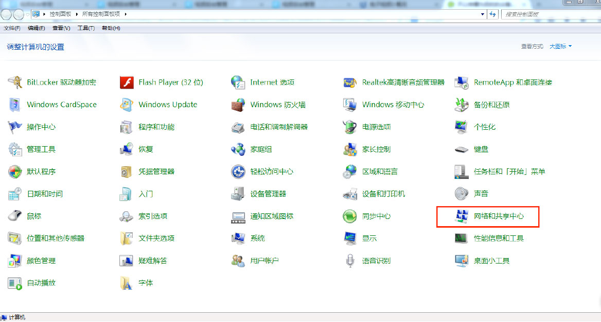
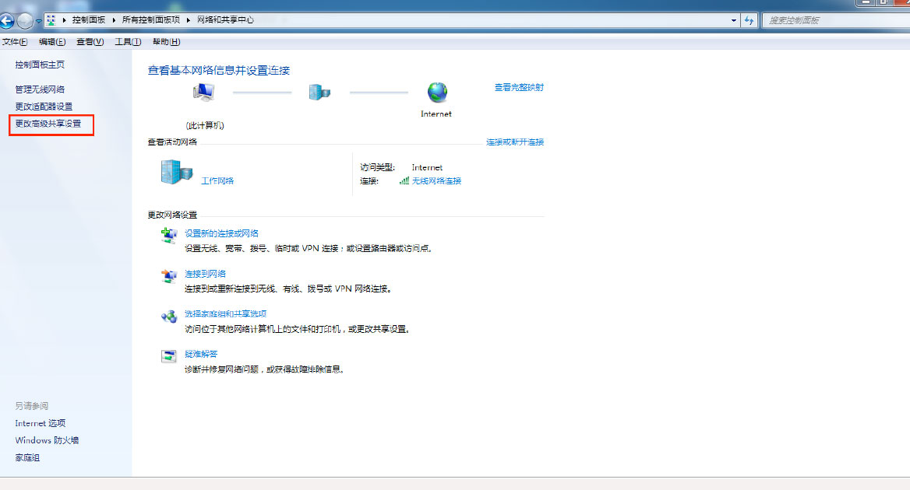
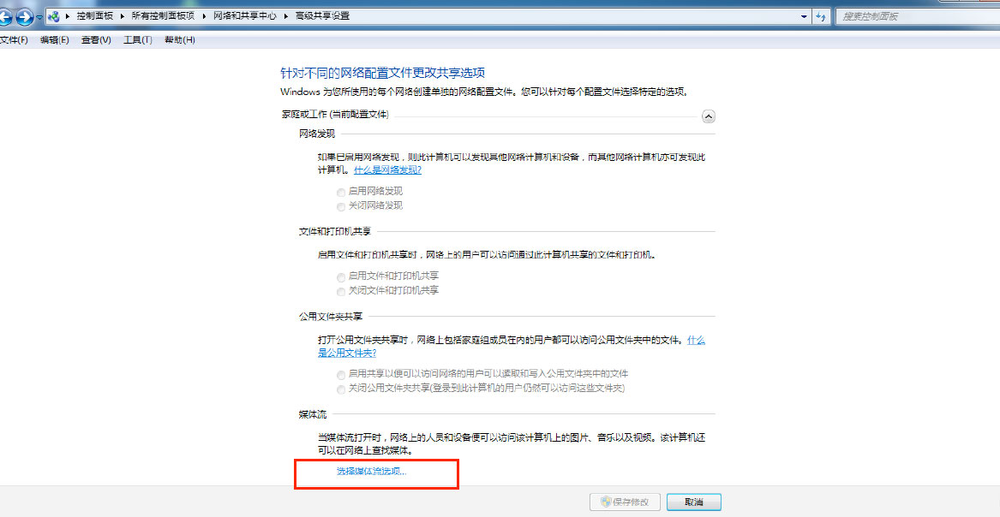
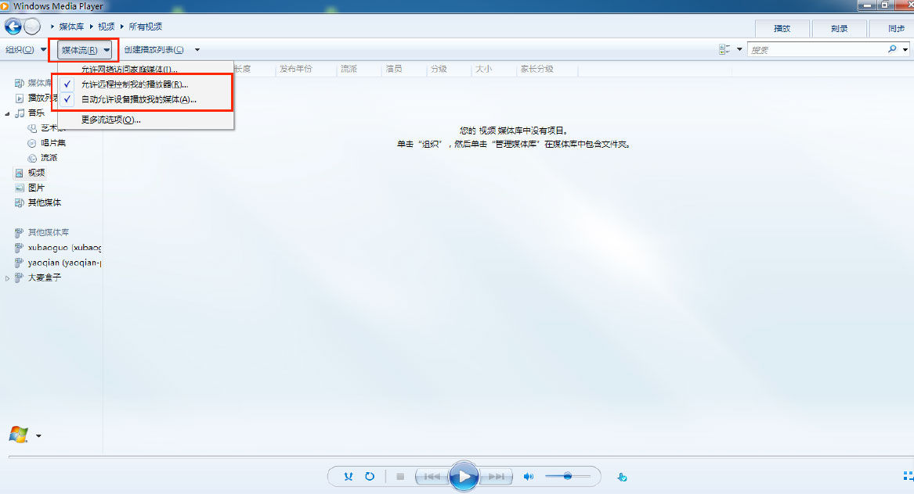
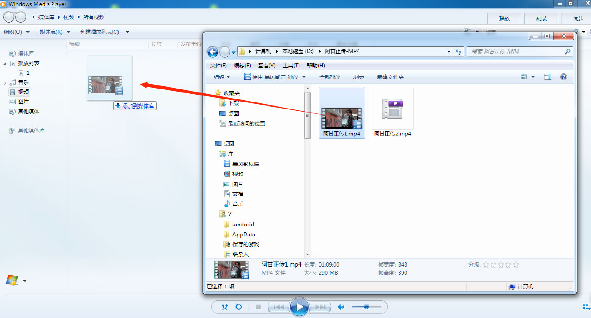
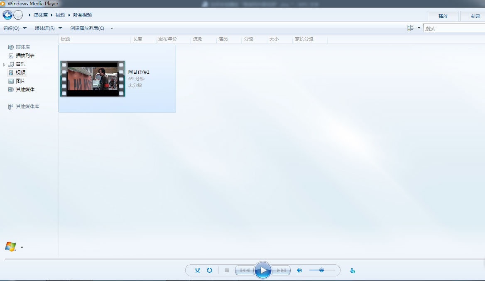
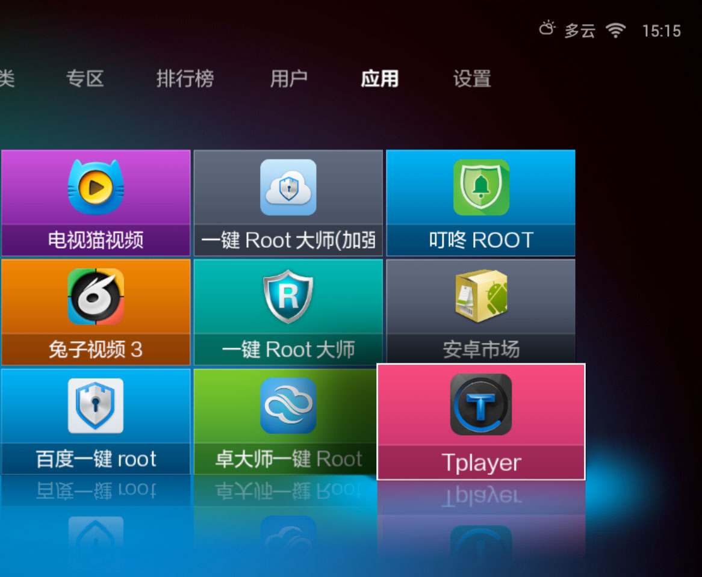
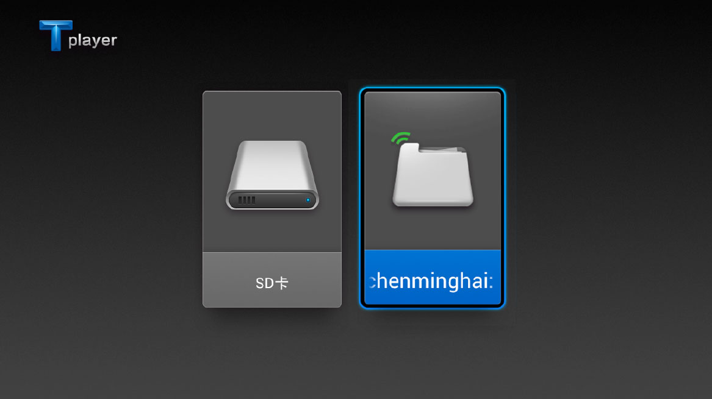
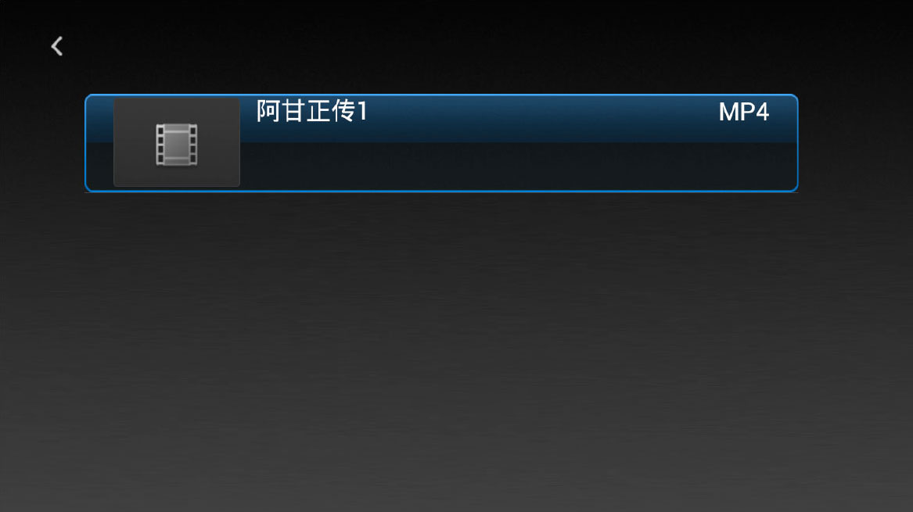

简介：
Tplayer，又叫坦克播放器，是一款针对Android智能电视研发的播放器，具有强大的解码功能，支持智能软硬解码切换，提供智能电视流畅的操作体验，同时，Tplayer支持本地播放和网络播放功能，完美兼容Android手机、平板、电视， 支持被视频软件作为第三方播放器的调用，并解决各种不能播放的问题，是Android智能终端不可多得的视频播放器。
软件特点：
1、针对智能电视研发，在电视上有流畅的操作体验（完美支持小米盒子，乐视盒子，乐视电视等，理论支持所有的Android智能电视）
2、支持全格式视频播放功能
3、支持本地播放和在线播放（在线播放需要安装兔子视频\电视猫等可以调用第三方播放器的软件）
4、Android 智能电视唯一一个具备有缓冲功能的播放器，网络不好的同学有福了
5、支持DLNA功能，可以通过搜狐视频，爱奇艺等手机APP远程轻松投放
6、支持搜索播放局域网内共享设备上的视频，PC端的视频即可远程播放到电视上
如何通过Tplayer在电视上播放PC端的视频
Tplayer播放器，可以播放本地视频和在线视频，同时使用Tplayer的局域网远程播放功能，还可以播放PC端本地视频。使用方法如下：
操作步骤：
Step1：几步学会Windows 7系统的局域网文件共享设置方法
一、打开PC端的"控制面板"，单击"网络和共享中心" 
二、"网络和共享中心"窗口，选择点击"更改高级共享设置" 
三、点击进入"选择媒体流选项"，在"媒体流选项"窗口中，你可以给自己PC共享端起一个响亮的名字，同时对一些设备的共享设置"已允许"，并点击"确定"，然后重启电脑，保证共享的服务开启 
四、重启电脑后，打开PC上的Window Media Player，点击"媒体流"——打钩选择"允许远程控制播放器" 
五、在PC端中，选择一个视频，并将视频文件拖到Window Media Player视频播放列表中  
Step2：将Tplayer安装到网络机顶盒/智能电视，远程播放PC端视频
一、打开网络机顶盒，通过U盘安装Tplayer，也可以通过浏览器打开网址http://www.tplayer.cn下载安装，安装完毕后，进入"全部应用"，找到并打开Tplayer

二、检测到PC端的共享文件后，打开该共享文件，即可播放文件中的视频  
通过Tplayer完美实现了将PC端视频投放到电视上播放的功能